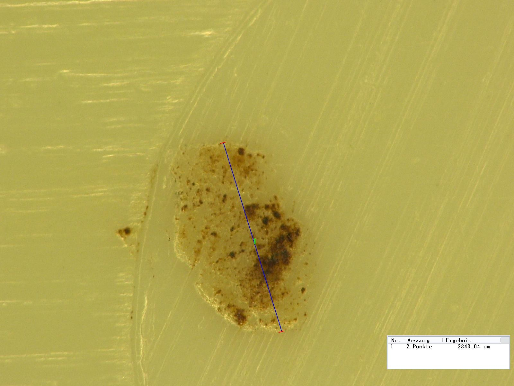

精密注塑模具与注塑件
模具设计、试模到批量注塑在同一厂区完成，内销与出口订单并行。
模具车间、注塑车间与测量室
工厂设模具车间与注塑车间，按图纸或样品开模，并承接批量注塑。2024 年建成三坐标与影像测量室。
- 注塑机42 台（90–800 t）
- 双色注塑机3 台
- 三坐标测量机1 台
- 二次元影像测量仪2 台
- 模具年产能约 180 套
- 注塑月产能约 600 万件

三项试制记录
家电装配
- 交付
- 结构支架先核对装配孔与平面度，交付多腔模具、签样件和全尺寸报告。
- 验证
- 该项目的整机装配与性能由采购方验证。
电动工具
- 交付
- 硬胶壳体与软胶握持面组合，交付双色试模件和材料批次记录。
- 验证
- 该项目的跌落与耐候等级待补充。
照明设备
- 交付
- 透镜先确认外观和光路样板，交付透明注塑样品后按签样批产。
- 验证
- 该项目材料透光率与整灯光效分别验证，整灯数据待补充。